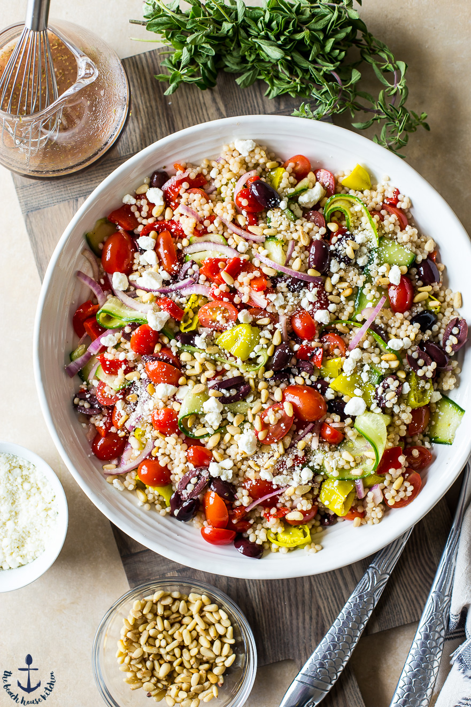

Greek Couscous Salad

Description
This Greek Couscous Salad is colorful and bursting with flavor and textures! Loaded with healthy ingredients and SUPER simple to put together!This Greek Couscous Salad is colorful and bursting with flavor and textures! Loaded with healthy ingredients and SUPER simple to put together!
Ingredients
- ½ cup water
- ¼ cup chicken broth
- 1 teaspoon minced garlic
- ½ cup pearl (Israeli) couscous
- 1 cup canned chickpeas (garbanzo beans), rinsed and drained
- ¼ cup chopped sun-dried tomatoes
- ¼ cup sliced Kalamata olives
- 2 tablespoons crumbled feta cheese
- 1 tablespoon white wine vinegar
- 1 ½ teaspoons lemon juice
- 1 teaspoon dried oregano
- ½ teaspoon ground black pepper